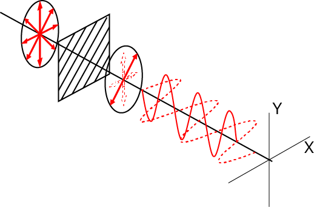
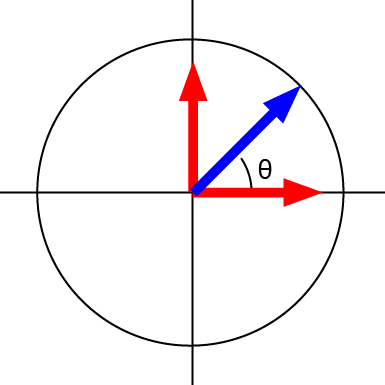

偏光顕微鏡のなぞ-03
なぜ，偏光が回転する？

ここで，偏光面を45度傾けた系を考えましょう．すると斜めの光のみが通過しますが，この光はX方向とY方向に分離することができます．
X,Y，それぞれの波形は，振幅，位相，ともに等しいので，
\(\Large E_x (z,t) = E_{0x} \ cos (kz - \omega t) \)
\(\Large E_y (z,t) = E_{0y} \ cos (kz - \omega t) \)
ここで，簡単に，z=0, E0x=E0y=1，とすれば，
\(\Large E_x (0,t) = cos ( - \omega t) \)
\(\Large E_y (0,t) = cos ( - \omega t) \)
合成波の角度をθ，とすると，

\(\Large tan \theta = \frac{y}{x} = 1\)
\(\Large \theta = \frac{\pi}{4} \)
となることがわかります．
この角度，θ，を変えるためには，
\(\Large tan \theta = \frac{y}{x} \)
とあるようにｘとｙとの比を変えればよいので，
\(\Large tan \theta = \frac{E_y (0,t)}{E_x (0,t) } \)
となり，ｘ，ｙの振幅を変化させればよいことになります．
振幅の変化？ということは物体を通る透過率の変化となりますね．．．
おかしいですね．．．．前ページにもあったように，複屈折とは，屈折率に異方性がある＝位相の差が発生するため，とあり，透過率の変化に関する記述はないですね．．．
それでは，位相の差が発生する場合にはどのようなことになるでしょう？